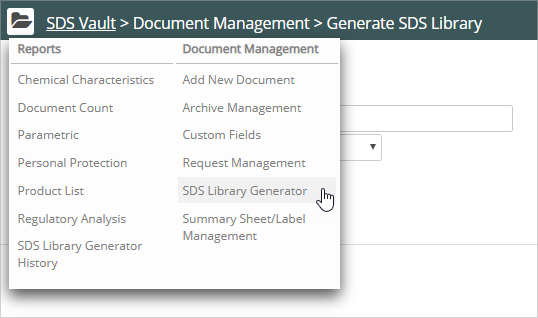
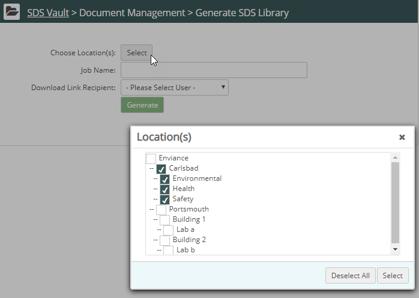
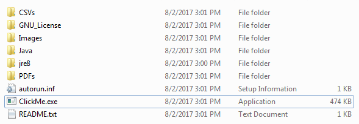

You can create an SDS Library that compiles all your SDS documents in a compressed file that you can download to your local computer. For convenient viewing, we also include an SDS Library Viewer in the download.
Note: The time required for Vault to create and email your SDS Library depends on the number of SDS documents in your Vault. Wait times could be significant if you have a big library.
To create an SDS Library file:
Click Vault Main Menu (). The Vault navigation pane displays. Select SDS Library Generator from the Document Management list.

The Generate SDS Library page displays:

Click Select to choose a location.
Check the locations you want to include in your file.
Enter a Job Name and specify the email address to receive the file.
Click Generate.
Vault creates the file and sends a link to download the file when it is ready.
To use the SDS Library Viewer:
Unzip the compressed file downloaded by Vault.
The following illustration shows the file structure:

Double-click the file ClickMe.exe to launch the SDS Library Viewer.
 ). The Vault navigation pane displays. Select SDS Library Generator from the Document Management list.
). The Vault navigation pane displays. Select SDS Library Generator from the Document Management list.